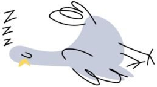

Fehler 404
Diese Seite macht gerade ein Nickerchen.
Die Seite, die du suchst, gibt es leider nicht oder noch nicht. Auf der Startseite findest du alles Wichtige über uns und die Stadttauben.
Du hast eine verletzte Taube gefunden? Dann hilft dir unsere Notfall-Hilfe sofort weiter.